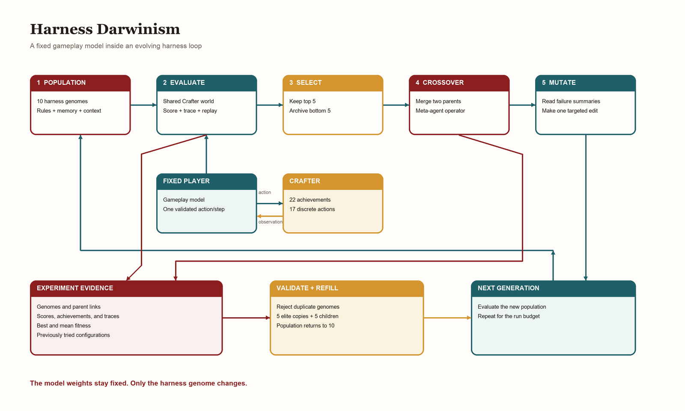
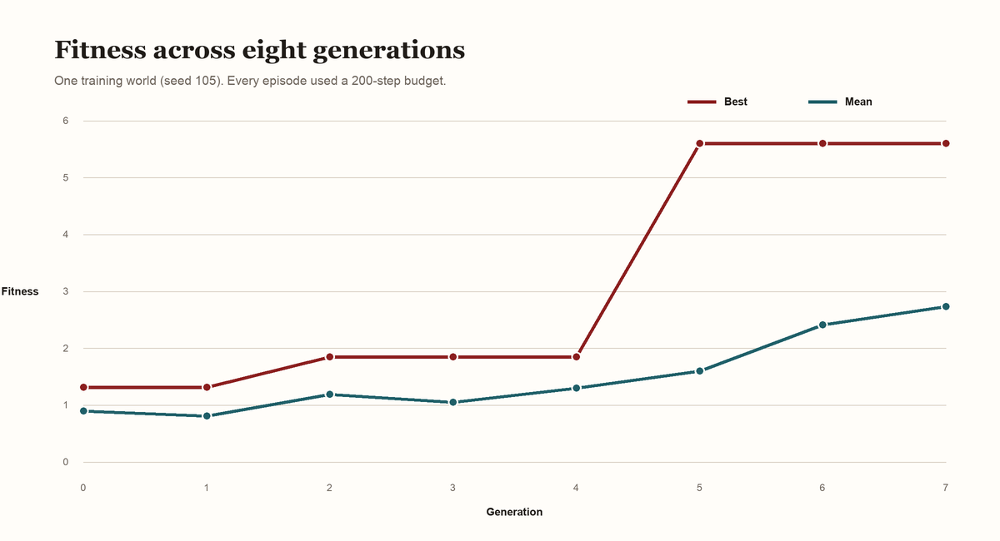
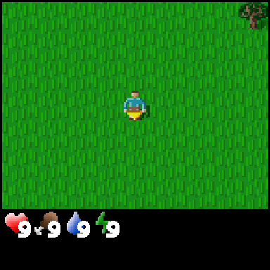

1. Introduction
As frontier models become more capable of completing tasks from single-shot prompts, the natural extension is to ask whether they can also improve performance across repeated attempts without changing their weights.
Prior work has treated external memory as one way to support this form of adaptation [2][3][4][5], but few have explored agentic memory through an evolutionary lens [7]. In this work, we propose Harness Darwinism, a framework for studying harness evolution as a form of recursive self-improvement.
Although our experiments did not produce a high absolute score per episode, after eight generations in Crafter, the best score per episode increased from 1.3 to 5.7, indicating that the harness evolved over time.
2. Methodology
2.1 Primer on genetic algorithms
A genetic algorithm mimics Darwin's principle of evolution. It begins with a population of candidate solutions, each with a genome that defines its behavior [6].
This process has five main stages:
- Initialization: The process starts with an initial set of candidates that take part in evolution. These candidates can be considered the seeds.
- Fitness evaluation: Every candidate is evaluated using a fitness function and assigned a score.
- Selection: Candidates are selected through a process similar to a roulette wheel, where the probability of selection is proportional to their fitness scores.
- Crossover: This is the crux of evolution, where two strong candidates cross to produce an offspring that can inherit dominant traits from either parent.
- Mutation: After crossover, a small part of the offspring's genome is randomly updated to preserve diversity among the new candidates.
The next population contains survivors and children. Repeating this cycle searches the genome space without testing every possible genome.
2.2 Our method
We evaluated Harness Darwinism in Crafter, a procedurally generated 2D survival environment. Each agent harness is represented as a genome whose rules, memory policy, action interface, and context budget could be changed and validated by the evolution loop.
{
"system_prompt": "You are a Crafter survival agent...",
"rules": [
"Collect wood before anything else.",
"Place a crafting table early."
],
"memory_policy": {
"type": "notes",
"max_items": 20
},
"context_budget": {
"history_steps": 10
}
}
2.3 Initialization
Generation 0 begins with 10 hand-written rules covering resource collection, tool crafting, health, water, sleep, combat, and furnace construction, and each initial genome received a random subset of one to five of those rules.
2.4 Fitness function
Crafter tracks 22 achievements, and we computed its standard score from their success rates:
score = exp(mean(log(1 + 100 × achievement_rate))) - 1Every candidate in a generation played the same world, which reduced within-generation noise and made selection consistent.
2.5 Selection and elitism
We rank all N candidates by fitness and retained the top K survivors which were picked at random based on probability that was proportional to their fitness scores. Rest were labelled as archived and were not considered for crossing.
2.6 Crossover
Once the candidates are sampled we then prepare it for the cross-over step. This crossing process is carried by a meta-agent which merged the individual genomes into an output that had to match the genome schema. By merging, the rules, memory polices and tools available are procedurally combined for both the parents whose decision is made by the meta agent
2.7 Mutation
After crossover, the meta-agent can read failure summaries from both parents and can randomly either add, remove, or update one rule. It can also adjust the memory policy or context budget.
A global ledger stored the hash of every tried configuration and K elite copies and N-K children then formed the next population, keeping the active population fixed at N.
3. Experiments
3.1 Crafter environment
Crafter is a 2D survival game set in a procedurally generated world, where the agent collects resources, manages health and energy, fights enemies, builds stations, and crafts better tools [1]. Its action space contains 17 discrete actions, while evaluation covers 22 achievements ranging from collecting wood to crafting advanced tools and finding diamond.
We optimized the geometric-mean Crafter score because it rewards progress across the full achievement set while giving additional value to achievements that few episodes unlock.
3.2 Experiment setup
| Setting | Value |
|---|---|
| Generations | 8 |
| Candidates per generation | 10 |
| Survivors per generation | 5 |
| Children per generation | 5 |
| Timesteps per episode | 200 steps |
| Gameplay model | Claude Haiku 4.5 |
| Meta-agent | Claude Opus 4.6 |
4. Results
4.1 Fitness over generations

Generation 0 began with a best score of 1.314 and a population mean of 0.901. The best score rose to 1.854 by Generation 2, remained there through Generation 4, and then reached 5.7 in Generation 5, where it stayed through Generation 7.
The population mean fluctuated during the earlier generations before rising from 1.299 in Generation 4 to 1.606 in Generation 5 and 2.740 by Generation 7, showing that later generations improved the overall population even after the best score stopped increasing.
4.2 Lineage Graph
Interactive lineage graph
Click any connection to highlight both crossover parents and inspect the exact crossover output, mutation, and final child genome.
Figure 3: Interactive lineage graph.

The lineage contains 80 evaluated harnesses, with pale edges showing every parent link and the red path tracing the ancestors of the final champion. Single-parent edges represent elite copies, while two-parent edges represent crossover children.
Candidate g2_00 provides one clear crossover example: its parents scored 1.314 and 0.876, with one carrying concise survival rules and the other a detailed technology plan. The crossover retained both traits, after which mutation added immediate stone mining and goal reassessment producing a child that scored 1.854.
4.3 Observed behavior

Candidate g3_00 collected wood and placed a table but did not reach stone tools, spending much of the episode near the beginning of the technology tree.
Candidate g4_05 collected wood, stone, and coal, placed a table, and made a wooden pickaxe, producing an action sequence with a clearer progression from resources to tools.

Candidate g5_02 unlocked nine achievements by collecting wood, stone, coal, water, and a sapling, making wooden and stone pickaxes, and placing both a table and a furnace.
4.4 Rule evolution
The rules became more specific as the meta-agent encountered failures and carried their lessons into later generations.
| Stage | Example policy change | Score |
|---|---|---|
| Generation 0 | “Collect wood before anything else.” | Best 1.314 |
| Generation 2 | Mine stone after the wooden pickaxe; check inventory; reassess the next goal. | 1.854 |
| Generation 4 | Add step limits, milestone notes, and direct cave or downward search. | 1.854 |
| Generation 5 | Add anti-stall thresholds, survival thresholds, and a 25-step history window. | 5.606 |
The champion first appeared as g5_02, after which elitism copied it to g6_05 and then g7_05, with both copies retaining the same score and genome.
The final policy remained imperfect because one rule claimed that stone was always two to four blocks below the surface, a statement that may fit seed 105 but is unsafe for unseen worlds. This suggests possible overfitting, since evolution can preserve a useful shortcut before there is evidence that it generalizes.
4.5 Comparison with published Crafter results
CrafterDojo reports 31.8 for its strongest prior baseline and 61.4 for its large behavioral-cloning model [8], while the official Crafter scoreboard lists humans at 50.5 [9]. Our score of 5.606 is substantially lower, but it is also not directly comparable because the published results use different observations, training budgets, policies, and many evaluation episodes.
5. Conclusion
Harness Darwinism turned an agent harness into a searchable genome by using selection to retain stronger policies, crossover to combine parents, and mutation to act on failure evidence, while preserving the complete history of the search.
Across eight generations with a fixed 200-step budget, best fitness rose from 1.314 to 5.606, while mean fitness rose from 0.901 to 2.740. Although the experiment did not reach published Crafter scores, it showed that a fixed model can produce better training behavior when the harness itself becomes the object of evolution.
The experiment had two main limitations. First, API usage constrained how far we could scale the search. A single 200-step episode could send more than two million input tokens because each action repeated recent history, while larger context genes increased both capability and cost. This limited the number of candidates and generations that could be explored within a practical budget.
Second, the starter rules narrowed the search space because they mainly covered survival and the crafting sequence. Evolution could recombine and mutate those rules, but it still began from a limited set of behaviors. A broader initial population could include navigation, spatial memory, recovery, and tool-use policies, giving future runs more varied material to evolve.
References
- Danijar Hafner. Benchmarking the Spectrum of Agent Capabilities, 2021. ↩
- Joon Sung Park et al. Generative Agents: Interactive Simulacra of Human Behavior, 2023. ↩
- Noah Shinn et al. Reflexion: Language Agents with Verbal Reinforcement Learning, 2023. ↩
- Andrew Zhao et al. ExpeL: LLM Agents Are Experiential Learners, 2024. ↩
- Guanzhi Wang et al. Voyager: An Open-Ended Embodied Agent with Large Language Models, 2023. ↩
- A. E. Eiben and J. E. Smith. Introduction to Evolutionary Computing, 2015. ↩
- Jenny Zhang et al. Darwin Gödel Machine: Open-Ended Evolution of Self-Improving Agents, 2025. ↩
- Junyeong Park, Hyeonseo Cho, and Sungjin Ahn. CrafterDojo: A Suite of Foundation Models for Building Open-Ended Embodied Agents in Crafter, 2025. ↩
- Danijar Hafner. Crafter repository README and official scoreboard, accessed October 2026. ↩